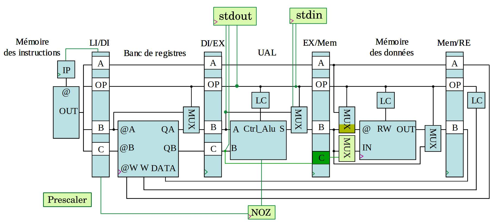
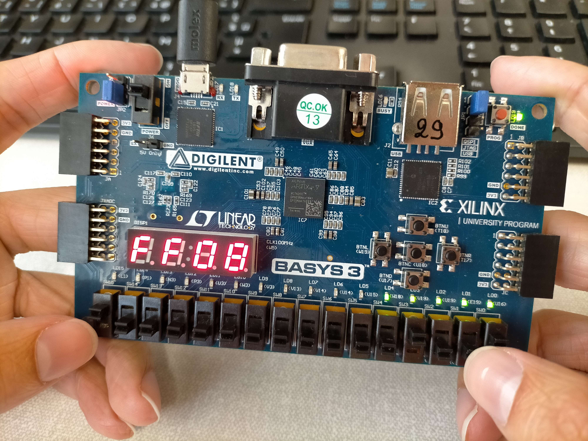

Repo Raisingue https://github.com/Atsuyo64/raisingue/
Repo Raisingue https://github.com/Atsuyo64/clangue/
Pour ce projet, nous avons développé un compilateur (nommé clangue) pour un langage C simplifié et un processeur pipeliné (nommé raisingue) en utilisant Lex, Yacc, et VHDL.
Le compilateur est structuré en deux étapes distinctes : une étape d'analyse lexicale, grammaticale et syntaxique pour générer un assembleur orienté mémoire. Cette étape est suivie d'un cross-compilateur en Python (asm2machineCode.py) qui transforme l'assembleur orienté mémoire en un format orienté registre et génère une mémoire d'instructions en VHDL.
Le processeur raisingue est conçu pour exécuter ces instructions en utilisant un pipeline à quatre étages, avec gestion des aléas et des entrées/sorties.
Le projet a été réalisé en deux phases principales : la conception du compilateur puis celle du processeur.
La première étape du compilateur analyse et transforme le code en un premier assembleur. Cela a nécessité l'utilisation de Lex pour tokeniser le code C, et Yacc pour l'analyse grammaticale et syntaxique.
La seconde étape du compilateur traduit et adapte l'assembleur pour le processeur. Cette étape, plus simple, a été réalisée en Python pour simplifier son développement.
Le processeur raisingue a été conçu pour exécuter les instructions de l'assembleur dans un pipeline à quatre étapes : Décodage, Exécution (ALU), Mémoire et Write-back (écriture vers les registres).
Vivado a été utilisé pour sa conception, et nous avons essayé de séparer au maximum les différents composants (une vingtaine de fichiers sources) ? Un composant Main relie l'ensemble des composants.
Notre implémentation se démarque par ces différents aspects :
En plus des instructions classiques (NOP, ADD, SUB, MUL, DIV, JMP, LDR, STR, AFC), notre jeu d'instruction contient également ces instructions et spécificités :
NOZ R1 : Met à jour le flag interne NOZ := (R1 != 0)JMF address : Saute à l'adresse address uniquement si le flag NOZ == false.CEQ R1 R2 R3 (resp. CNE, CLE, CGE, CLT et CGT) : R1 := (R2 == R3) (resp. !=, <=, >=, < et >)PRT R1 R2 : "écrit" la valeur de R2 soit sur les LEDs si R1 == 0, sur le côté droit du display 7-segment si R1 == 1, et sur le côté gauche si R1 == 2GSW R1 R2 : (Get SWitch) lit la valeur du switch numéro R2 dans R1SRF R1 R2 : (Store ReFerence) opération sur pointeur : *R1 := R2LRF R1 R2 : (Load ReFerence) opération sur pointeur : R1 := *R2LDR et STR afin de copier les données dans les registres pour être utilisées puis les sauvegarder.Note : pour l'assembleur post-Yacc, tous les registres en arguments sont en réalité des adresses mémoire (assembleur orienté mémoire), et les adresses sont en réalité des labels.
Trois opérations sont réalisées durant cette étape :
LDR STR nécessaires pour l'assembleur orienté registreJMP) avant d'être définis)Le processeur utilise le pipeline proposé dans le sujet. Notre version possède 4 étages et les éléments synchronisés sur l'horloge séparant les étages sont :
Comme le montre la figure suivante, notre processeur ajoute les unités suivantes : Unité de branchement,

Les nouvelles unités (en vert) sont : Prescaler, stdin, stdout, NOZ et un MUX. Decoder fait office d'unité de branchement.
Les risques d'aléas sont causés par le fait que plusieurs operations interdépendantes peuvent être en même temps dans le pipeline. Dans notre processeur, les aléas ont été éliminés grâce au Decoder qui indique à PC de rajouter des instructions NOP en cas de risque d'aléas. Nous avons amélioré la rapidité d'exécution de 29.5% (3.1 ms contre 4.4 ms sur un programme test) en ne rajoutant des NOP qu'après des instructions nécessitant un write-back.
Utilisation de %left et %prec.
Création de l'instruction et du flag NOZ.
Le délai de propagation des signaux introduisait un délai d'un cycle de clock. Le problème a été réglé décalant les clocks en question d'une demi période (front descendant).
Une décomposition en machine à état pour simplifier la réflexion.
Ajout d'instructions LDR et STR pour passer de l'un à l'autre.
Ajout de NOP entre les instructions au niveau du processeur.
Le compilateur clangue génère correctement un assembleur simplifié qui est ensuite transformé en code machine par le cross-compilateur Python. Le processeur raisingue exécute correctement les instructions, gère les sauts et évite les conflits de données.
Le débogueur R.I.C.A.R.D. permet de tester le code machine généré par les compilateurs. Il permet aussi de le debugger en permettant de suivre l’état des registres et de la mémoire pendant l’exécution du code.
Afin de démontrer les capacités de notre compilateur + processeur, nous avons créé un petit jeu. Le but du jeu est de déterminer le prochain terme de la suite de Fibonacci (en binaire).
Le programme affiche un message pour informer le joueur de sa réussite ou non.

Le projet a permis de développer un compilateur fonctionnel et un processeur pipeliné capable de traiter un ensemble d’instructions arithmétiques, logiques et de contrôle de flux. La gestion des aléas du pipeline et l’optimisation des sauts conditionnels ont été des défis majeurs, mais les solutions mises en place ont permis de garantir la bonne exécution du système. Le débogueur intégré R.I.C.A.R.D. constitue un outil pratique pour valider le bon fonctionnement des programmes et du compilateur et le processeur dans différents scénarios d'exécution.